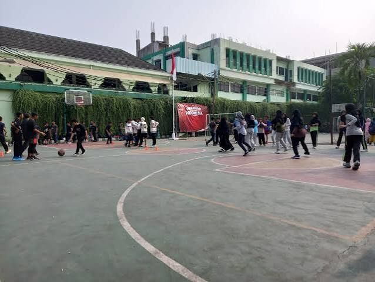

Lapangan
Ruang terbuka untuk olahraga, upacara, dan kegiatan kepramukaan.
Sarana yang memadai dan modern untuk menunjang proses pendidikan yang berkualitas.

Ruang terbuka untuk olahraga, upacara, dan kegiatan kepramukaan.
Tempat siswa belajar teknologi informasi dan literasi digital.
Laboratorium untuk praktikum dan eksperimen sains.
Layanan pertolongan pertama dan pembinaan kesehatan siswa.
Pendampingan belajar dan bimbingan bagi siswa serta orang tua.
Penyediaan makanan sehat, bergizi, dan halal bagi siswa.
Wadah dakwah dan kepedulian sosial sekolah bagi masyarakat sekitar.